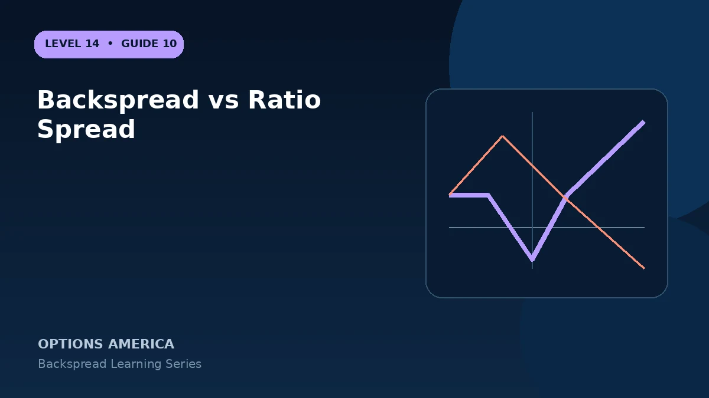

Understand why a backspread owns more options than it sells while a front ratio spread usually sells more than it owns.
Backspread ratio
A 1-by-2 call backspread sells one lower call and buys two higher calls. Beyond the upper strike it behaves like one extra long call and has unlimited upside potential.
Front ratio spread
A typical 1-by-2 call ratio spread buys one lower call and sells two higher calls. Beyond the short strike it behaves like one uncovered short call and can have unlimited upside loss.
Credit is not risk
Both may be entered for a credit, but initial cash flow does not reveal maximum loss. The number and location of short contracts determine tail exposure.
Naming discipline
Broker labels vary. Verify signed quantities, payoff graph and margin before entry because confusing backspread with ratio spread can reverse the intended risk completely.
A practical example
Sell one 100 call and buy two 105 calls: backspread with long upside convexity. Buy one 100 call and sell two 105 calls: front ratio with uncovered upside risk.
This simplified example focuses on selected expiration outcomes; live prices and risks will differ. Live option prices also reflect the underlying price, time decay, rates, dividends, liquidity and transaction costs. Greeks are theoretical estimates, not guarantees.
Turn the payoff into a trading plan
Before entering backspread vs ratio spread, write down the stock price, both strikes, expiration, contract ratio and total opening credit or debit. Then calculate the quiet-side result, maximum loss at the long-option strike and the far-move breakeven. These three checkpoints make the position easier to monitor and help prevent the attractive tail payoff from hiding the loss valley.
Test at least five scenarios: no move, a move to the short strike, a move to the long strike, a move to breakeven and a move well beyond breakeven. Repeat the exercise with implied volatility higher and lower and with less time remaining. The resulting range is more useful than a single payoff line because a live backspread can change substantially before expiration.
Finally, define the catalyst, maximum acceptable loss, review date and closing method in advance. Use one multi-leg order whenever possible, confirm every fill and recalculate the remaining position before changing any leg. Assignment, liquidity and transaction costs belong in the plan even when the expiration loss appears defined.
Frequently asked questions
Which has more long options?
The backspread.
Can a front ratio have unlimited loss?
Yes, when it leaves a net uncovered short call.
Why ignore the strategy name?
Exact quantities determine the real payoff.
Continue the Backspread Strategies cluster
Explore related guides: Ratio Backspread vs Long Straddle · How to Adjust and Close a Ratio Backspread · How to Build a Ratio Backspread. For a structured sequence, use the free Level 14 – Backspread course.
Options involve risk and are not suitable for every investor. This material is educational and is not investment, tax or legal advice. Greeks are theoretical estimates, and contract terms and broker requirements can vary.